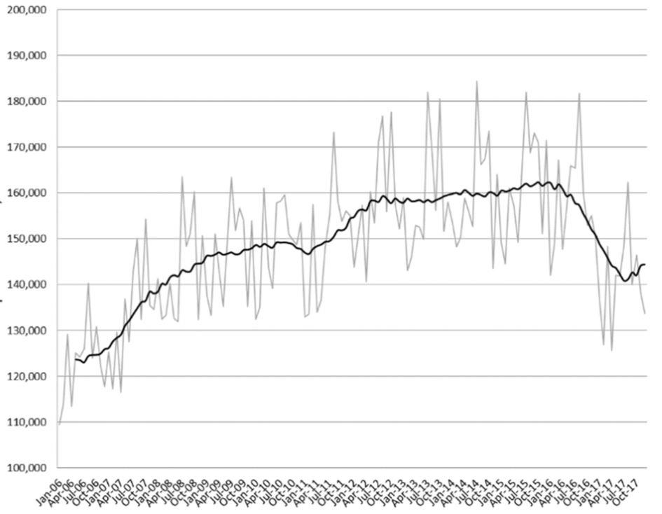

Les lecteurs de « Méthode » qui s’intéressent à la démographie russe peuvent consulter les analyses démographiques publiées dans Stratpol en 2014 et 2016 qui synthétisent la complexe évolution démographique de la jeune fédération de Russie de 1999 à 2016.
La période 1990-1999 a vu un effondrement des naissances, passées de 1,9 à 1,2 millions par an. Le taux de fécondité passa lui de 1,89 à 1,17 enfants par femme. Dans le même temps, la mortalité explosa et le nombre de décès passa de 1,65 à 2.15 millions chaque année.
La population au cours de cette décennie déclina en moyenne naturellement (naissances moins décès) de 543 507 habitants, une baisse compensée par une forte immigration de l’ex-URSS vers la fédération de Russie.
La période, 2000-2016 a vu un redressement démographique totalement imprévu par tous les analystes, think-tanks et démographes. Au cours de ces 16 années, le nombre de naissances ne cessa d’augmenter et la mortalité de diminuer. Le nombre de naissances remonta de 1,2 à 1,9 millions de personnes tandis que dans le même temps le la mortalité ne cessa de diminuer, passant de 2,3 millions de décès par an à 1,8 millions en 2016.
Conséquence de ce redressement démographique, dès 2009 la population russe ne diminue plus, mais augmente, avec un solde migratoire positif et faible, maîtrisé à autour de 250 000-300 000 personnes par an. En 2013, 2015 et 2016, la population russe augmenta même naturellement, de quelques dizaines de milliers de personnes et ne diminua naturellement que de 2.226 personnes en 2016.
Les données démographiques pour 2017 sont en ligne1 et sont tout aussi surprenantes qu’inquiétantes.
La natalité s’est effondrée en 2017 avec 1 689 884 naissances contre 1 888 729 naissances en 2016 soit une chute très inquiétante de 10,1 %, ramenant le nombre de naissances à un volume à peine plus élevé qu’en 2007, où le nombre de naissances avait atteint 1 610 122.
La population a baissé naturellement sur l’année de 134 456 habitants, baisse compensée par une immigration permanente elle aussi en baisse, de 172 551 habitants, permettant d’obtenir une hausse globale de population de 38 095 habitants pour 2017.
Dans la Russie centrale la baisse des naissances aura été de 10 % avec des chutes impressionnantes dans les petites villes désindustrialisées : -14 % dans les oblasts d’Orlov, Riazan, Briansk, Vladimir, ou -12 % dans celui de Lipetsk. Moscou ne voit le nombre de ses naissances ne diminuer que de 7,8 %.
La Russie centrale produit 25 % des naissances totales du pays.
Dans le district du nord-ouest la diminution des naissances est de 10,5 % avec des effondrements en Carélie (-13,7 %), dans les oblasts de Pskov et Novgorod (-14 %), ou dans le district des Nenets : -16,5 %.
Saint-Pétersbourg s’en sort un peu mieux avec une baisse de -8,7 %.
Le district du nord-ouest produit 9 % des naissances du pays.
Le district fédéral du sud voit lui le nombre de ses naissances diminuer de 10,5 % avec des baisses particulièrement fortes en Adiguée (-12,2 %) et dans les oblasts de Rostov et Volgograd (-11,5 %). Les meilleurs résultats de ce district sont obtenus en Crimée ou le nombre de naissances ne diminue que de 8,8 %.
Le district fédéral du sud produit 10 % des naissances du pays.
Dans le district du Caucase nord, la baisse est de 6 %, marquée surtout en Ossétie du nord, mais aussi en Kabardino Balkarie et en Karaevo-Cherkessie, les deux zones avec de fortes minorités russes ethniques comptant pour 20 et 30 % de la population.
Les républiques nationales du Caucase du nord (Daguestan, Ingouchie et Tchétchénie) ne voient le nombre de leurs naissances ne diminuer que de respectivement 4,9 %, 1,8 % et 0 % en Tchétchénie, où le nombre de naissances ne baisse pas. Ces trois entités territoriales, qui représentent 5 millions d’habitants soit 3,5 % de la population du pays, ont « produit » en 2017 88 000 naissances, soit 5 % des naissances du pays, un chiffre stable depuis 20072.
Néanmoins ces trois républiques sont en tête des sujets de la fédération de Russie pour le ratio du nombre de décès par rapport au nombre de naissances. En Ingouchie, ce ratio est de 19,4 %, 22 % en Tchétchénie et 30 % au Daguestan. Suivent Tiva (40 %) et l’oblast de Tioumen avec 55 %.
Pour information, le district du Caucase nord produit au total 8,5 % des naissances du pays.
Le district de la Volga connait une baisse des naissances de 13,5 % (!) avec des baisses fortes dans l’oblast de Kirov (-15,8 %), en Oudmourtie (-14,9 %), en Tchouvachie (-15 %) ou dans le Krai de Perm (-14,2 %).
La situation est un peu meilleure en Bachkirie et dans l’oblast de Nizhny Novgorod (-11,6 %), le Tatarstan connait lui une baisse de 13,9 %.
Le district de la Volga produit 19,5 % des naissances du pays.
La situation en Oural est un peu meilleure avec une baisse de 10,8 %, principalement marquée dans les oblasts de Tcheliabinsk (-12,6 %), de Kourgan (-11,2 %) et Sverdlovsk (-10,5 %) tandis qu’elle est un peu meilleure dans les oblasts de Tioumen (-8,3 %) et le district autonome des Nenets avec une baisse de 8,5 %.
L’Oural produit 9 % des naissances du pays.
La situation est tout aussi préoccupante en Sibérie avec une baisse de 11,3 % et notamment dans l’Altaï (-12 %), dans l’Oblast de Tomsk (-11,8 %) et surtout d’Omsk avec une baisse de 14,3 %.
La Sibérie produit 14 % des naissances du pays.
En extrême orient la baisse est de 10 %, particulièrement forte dans le district du Birobidjan (-13,3 %). A noter que Magadan ne connait par contre une baisse de naissances que de 1,7 %.
L’extrême orient produit 5 % des naissances du pays.
La mortalité, elle, continue de diminuer en 2017, le nombre de décès atteignant 1 824 430, une diminution de 3,4 % par rapport à 2016 et le nombre de décès annuels le plus faible depuis 1992 où le pays avait connu 1 807 441 décès.
Il y a des raisons fortes à cela et la première d’entre elles est la chute continue des décès pour raisons extérieures à partir des années 2000.
47 % des décès en Russie restent liés aux maladies cardiovasculaires3.
La mortalité la plus importante reste, en Russie centrale dans les oblasts de Pskov, de Nijni Novgorod, Tver, Toula ou Ivanovo.
A contrario, la mortalité la plus faible est dans les républiques nationales du Caucase du nord, ainsi que dans l’Oblast de Tioumen et en Yakoutie. Moscou occupe la 10ème place, le Tatarstan la 19ème.
Les meurtres représentent 6 % des décès pour raisons externes et les suicides 14 %.
Enfin les accidents de la route représentent 11 % des décès pour raisons externes mais ils sont en baisse considérable : 20074 avait vu 233 809 accidents, 33 308 morts et 292 206 blessés, 10 ans plus tard en 20175, le pays a connu 133 203 accidents, 16 600 morts et 168 146 blessés.
VERS UN NOUVEAU CYCLE DÉMOGRAPHIQUE ?
Une observation du taux de fécondité russe donne une bonne idée des oscillations démographiques russes :
3,2 enfants par femme en 1949 contre 2,5 enfants par femme en 1960,
2,3 enfants par femme en 1990,
1,19 enfants par femme en 1999,
1,76 enfants par femme en 2016,
1,61 enfants par femme en 2017 mais reste depuis 2011 supérieur à 2 enfants par femme au sein du monde rural.
En comparant ci-dessous en bleu, les naissances et en rouge, les décès, on voit clairement que les décès ont dépassé les naissances à partir de 1992, augmentant jusqu’en 1995, tandis que le nombre de naissances ne cessait de baisser, créant le phénomène de croix russe tandis qu’à partir de cette date, un mouvement inverse a commencé, entraînant que les deux courbes ne se recroisent et que le nombre de naissances ne dépasse de nouveau le nombre de décès.
La hausse des naissances des dernières années (de 2005 à 2015) est donc due aux femmes (classe d’âge nombreuse) nées entre 1980 et 1990 qui ont, à l’âge d’enfanter, bénéficié du redressement économique des années 2000, du monde Poutine, raison pour laquelle on parle de génération Poutine. Nous entrons aujourd’hui dans un nouveau cycle qui va accompagner les femmes nées entre 1990 et 2005, soit, si l’âge de 28 ans est maintenu pour le premier enfant, les femmes qui feront leur premier enfant entre 2018 et 2033. Or, ces jeunes femmes sont moins nombreuses. En effet, l’âge du premier enfant ne cesse de reculer, s’il était de 24 ans en 1995, de 25 ans en 2003, 27 an en 2007, il est aujourd’hui de 28,5 ans pour 2016.
La baisse des naissances n’est donc aujourd’hui plus suffisamment compensée par la forte baisse des avortements, passés de 5,5 millions en 1960 à 2 millions en 2000 et 700 000 en 2016.
A titre d’information6, le nombre d’avortements en URSS sur la période de 1954 à 1990 s’élevait à 245 629 151 sur 36 ans, soit une moyenne annuelle de 6 826 032 avortements par an pour en moyenne 2,5 millions de naissances.
Sur la même période (1957-1990), on estime le nombre d’avortements à 157 569 615 sur 33 ans soit une moyenne annuelle de 4, 774 millions par an pour la Russie soviétique.
QUE DEVRAIT-T-IL SE PASSER MAINTENANT ?
La pyramide des âges russe permet de comprendre ce qui va se passer entre aujourd’hui et 2035. Le nombre de femmes de 30 ans sera en 2035 de 30 % inférieur au nombre de 2015, laissant entrevoir une baisse autant importante en proportion des naissances, avant que le nombre de naissances ne re-augmente jusqu’au milieu du siècle.
La population russe comprend 1 238 760 femmes de 30 ans en 2015
La population russe comprendra 795 360 femmes de 30 ans en 2035
Source : Anatoly Karlin sur UNZ
Depuis 2008, le nombre de femmes en âge de procréer diminue déjà, mais cette baisse est compensée par la hausse du nombre d’enfants par femme, la baisse des avortements et la baisse de la mortalité infantile qui a diminué de 70 % en un demi-siècle.
Dans le même temps, l’espérance de vie continue d’augmenter pour atteindre 73 ans en 2017, contre 61 ans en 2000 comme on peut le voir sur le graphique ci-dessous.
En 2007, le gouvernement russe a lancé un programme fédéral de soutien aux naissances et dont le volet principal était le Matkapital, en l’espèce une aide financière de 453 026 roubles pour 2018, soit 6 471 euros, pour la naissance d’un second enfant. En Russie cette somme correspond à 12 salaires moyens du pays et 5 fois le salaire moyen de la capitale Moscou. Ce programme est maintenu jusqu’en 2022 mais devrait voir son coût diminuer avec la baisse du nombre des naissances.
En 2016 en Russie, ce sont 740 000 premiers-nés et 760 000 deuxièmes enfants qui sont venus au monde.
L’état russe vient de voter de nouveaux volets complémentaires pour re-stimuler la naissance du premier enfant, via notamment une allocation mensuelle de 10 500 roubles (30 % d’un salaire moyen du pays) pendant une période de 18 mois et des fortes diminutions de crédit immobilier pour des périodes de 5 ans.
Il y a une raison à cela, l’étude de structure des naissances7 permet de voir que le nombre de premier enfant ne fait que diminuer depuis 2013 (colonne de gauche) et doit donc être stimulé, tandis que ne cessent d’augmenter les naissances de second, troisième, quatrième et cinquième enfant, ce qui est une excellente tendance. Ces chiffres semblent en effet confirmer que la Russie ne connait pas un problème de volonté de la part des citoyens d’avoir des enfants mais au contraire un problème structurel de nombre de femmes en âge d’avoir des enfants.
Enfin, un gigantesque projet fédéral envisage construction et modernisation de polycliniques pour enfants sur 3 ans, avec un budget alloué de 10 milliards de roubles, soit 145 millions d’euros.
MATERNITÉ, DÉMOGRAPHIE ET PROBLÈMES SOCIAUX
Ces thématiques sont au cœur de la campagne de Vladimir Poutine pour son quatrième mandat qui devrait s’articuler autour des thématiques de Jeunesse, Maternité, Démographie et problèmes sociaux.
VERS UN SCÉNARIO DÉMOGRAPHIQUE PONDÉRÉ ?
Rosstat publiait jusqu’à cette année 3 pronostics démographiques pour 2035, il n’en reste qu’un seul cette année qui correspond au scénario moyen de ces dernières années. Que nous dit-il ?
Que la décroissance naturelle devrait être de 100 000 habitants en 2018, -218 000 et -270 000 en 2019 et 2020 pour atteindre -300 000 en 2021 puis -400 000 à partir de 2024.
Les autorités estiment que cette décroissance devrait commencer à diminuer à partir de 2030. Elément important, les autorités russes ne semblent plus considérer un scénario avec une immigration forte qui permettait dans l’un des scénarios précédents de combler la décroissance naturelle. Les autorités semblent en effet à ce jour envisager une immigration permanente de 5 millions de personnes sur 18 ans par an sur la période de 2018 à 2035, soit autour de 277 000 par an, une moyenne identique à la période des cinq dernières années. Cette immigration ne devrait donc pas permettre de compenser la baisse naturelle de population qui devrait avoir lieu de 2020 à 2033 avec un creux notamment sur la période 2024 à 2030, qui devrait connaitre une baisse annuelle moyenne de 120 000 habitants.
Ces pronostics démographiques semblent assez pessimistes et envisagent une légère baisse de population sur la période, passant de 146,8 millions au 1er janvier 2018 (situation actuelle) à 145,8 millions d’habitants au 1er janvier 2035.
L’année 2018 pourrait néanmoins voir une nouvelle hausse des naissances, car 2017 a vu une hausse importante du nombre de mariages, passés de 985 834 en 2016 à 1 049 725 en 2017, soit une augmentation de 6,5 %. Cette augmentation du nombre de mariages pourrait logiquement entraîner une hausse substantielle des naissances au cours de cette année 2018.
Paradoxe démographique de plus, la hausse du nombre de mariages est marquée dans les zones les plus touchées par la chute des naissances en 2017, notamment en Russie centrale (+7,8 %) et dans les oblasts de Belgorod (+18,5 %), Voronej (+18,2 %), Orlov (+18,6 %) ou Briansk avec +12,8 % ainsi que l’oblast d’Arkhangelsk dans le nord avec +10 %. Dans le sud du pays, c’est dans le Krai de Krasnodar (+11,4 %) et dans l’oblast de Rostov (+11,1 %) que les hausses sont les plus marquées.
Curieusement, tout le Caucase du nord voit une diminution du nombre de mariages (-9,2 % au Daguestan, -2,2 % en Tchétchénie …) hormis en Ingouchie (+9,8 %) et dans le Krai de Stavropol (+5,5 %).
A l’est, en Sibérie et extrême orient, de spectaculaires hausses du nombre de mariages sont constatées dans l’Altaï (+10,8 %), en Bouriatie (+12,1 %), en Tiva (+27,5 %) ainsi qu’en Khakassie (+14,8 %), dans l’oblast de Magadan (+10,5 %) et en Chukotka (+16 %).
A Moscou, le nombre de mariages a augmenté de 6,5 % (90 096 mariages en 2017 contre 85 847 en 2016, dont 15 % avec un ressortissant étranger, principalement issus des pays suivants : Israël, Allemagne, France, Biélorussie, Moldavie et Géorgie.
Cette surprenante hausse des mariages explique sans doute le fait que l’étude des mariages par mois sur la période 2006-2017 voit une amélioration de la situation sur la fin de l’année 2017 et une hausse en année comparée du nombre de naissances. Cette tendance va-t-elle continuer en 2018 et voir une baisse naturelle de population plus faible en 2018 qu’en 2017 ?
C’est l’opinion de démographes russes8 qui envisagent clairement une hausse des naissances pour 2018 avec 1,732 millions de naissances (soit presque le chiffre de 2009 et qui ramènerait l’indice de fécondité à 1,68 enfants par femme) et 1,788 millions de décès soit une baisse naturelle de population de 56 000 habitants, compensée par une immigration permanente de 300 000 personnes, pour atteindre 147,126 millions d’habitants au 1er janvier 2019, contre 146,877 millions au 1er janvier 2018. Soit un chiffre de 150 000 habitants de plus que la prévision de Rosstat.
La démographie russe n’a pas fini de jouer des tours a ceux qui s’y intéressent.
Partager cette page